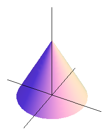
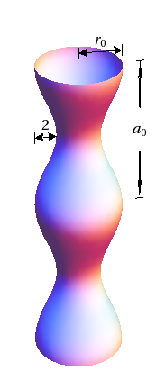

Section12.6Surfaces Defined Parametrically and Surface Area
Motivating Questions
What is a parameterization of a surface?
How do we find the surface area of a parametrically defined surface?
We have now studied at length how curves in space can be defined parametrically by functions of the form \(\vr(t) = \langle x(t), y(t), z(t) \rangle\text{,}\) and surfaces can be represented by functions \(z = f(x,y)\text{.}\) In what follows, we will see how we can also define surfaces parametrically. A one-dimensional curve in space results from a vector function that relies upon one parameter, so a two-dimensional surface naturally involves the use of two parameters. If \(x = x(s, t)\text{,}\)\(y = y(s, t)\text{,}\) and \(z = z(s, t)\) are functions of independent parameters \(s\) and \(t\text{,}\) then the terminal points of all vectors of the form
form a surface in space. The equations \(x=x(s,t)\text{,}\)\(y=y(s,t)\text{,}\) and \(z=z(s,t)\) are the parametric equations for the surface, or a parametrization of the surface. In Preview Activity 12.6.1 we investigate how to parameterize a cylinder and a cone.
Preview Activity12.6.1.
Recall the standard parameterization of the unit circle that is given by
where \(0 \le t \le 2\pi\) and \(-5 \le s \le 5\text{.}\) Explain your thinking.
Just as a cylinder can be viewed as a “stack” of circles of constant radius, a cone can be viewed as a stack of circles with varying radius. Modify the parametrizations of the circles above in order to construct the parameterization of a cone whose vertex lies at the origin, whose base radius is 4, and whose height is 3, where the base of the cone lies in the plane \(z = 3\text{.}\) Use appropriate technology to plot the parametric equations you develop. (Hint: The cross sections parallel to the \(xy\)-plane are circles, with the radii varying linearly as \(z\) increases.)
Subsection12.6.1Parametric Surfaces
In a single-variable setting, any function may have its graph expressed parametrically. For instance, given \(y = g(x)\text{,}\) by considering the parameterization \(\langle t, g(t) \rangle\) (where \(t\) belongs to the domain of \(g\)), we generate the same curve. What is more important is that certain curves that are not functions may be represented parametrically; for instance, the circle (which cannot be represented by a single function) can be parameterized by \(\langle \cos(t), \sin(t) \rangle\text{,}\) where \(0 \le t \le 2\pi\text{.}\)
In the same way, in a two-variable setting, the surface \(z = f(x,y)\) may be expressed parametrically by considering
where \((s,t)\) varies over the entire domain of \(f\text{.}\) Therefore, any familiar surface that we have studied so far can be generated as a parametric surface. But what is more powerful is that there are surfaces that cannot be generated by a single function \(z = f(x,y)\) (such as the unit sphere), but that can be represented parametrically. We now consider an important example.
Example12.6.1.
Consider the torus (or doughnut) shown in Figure 12.6.2.
Figure12.6.2.A torus.
To find a parametrization of this torus, we recall our work in Preview Activity 12.6.1. There, we saw that a circle of radius \(r\) that has its center at the point \((0,0,z_0)\) and is contained in the horizontal plane \(z = z_0\text{,}\) as shown in Figure 12.6.3, can be parametrized using the vector-valued function \(\vr\) defined by
Figure12.6.3.A circle in a horizontal plane centered at \((0,0,z_0)\text{.}\)
To obtain the torus in Figure 12.6.2, we begin with a circle of radius \(a\) in the \(xz\)-plane centered at \((b,0)\text{,}\) as shown on the left of Figure 12.6.4. We may parametrize the points on this circle, using the parameter \(s\text{,}\) by using the equations
Figure12.6.4.Revolving a circle to obtain a torus.
Let’s focus our attention on one point on this circle, such as the indicated point, which has coordinates \((x(s), 0, z(s))\) for a fixed value of the parameter \(s\text{.}\) When this point is revolved about the \(z\)-axis, we obtain a circle contained in a horizontal plane centered at \((0,0,z(s))\) and having radius \(x(s)\text{,}\) as shown on the right of Figure 12.6.4. If we let \(t\) be the new parameter that generates the circle for the rotation about the \(z\)-axis, this circle may be parametrized by
Now using our earlier parametric equations for \(x(s)\) and \(z(s)\) for the original smaller circle, we have an overall parameterization of the torus given by
To trace out the entire torus, we require that the parameters vary through the values \(0\leq s\leq 2\pi\) and \(0\leq t\leq 2\pi\text{.}\)
Activity12.6.2.
In this activity, we seek a parametrization of the sphere of radius \(R\) centered at the origin, as shown on the left in Figure 12.6.5. Notice that this sphere may be obtained by revolving a half-circle contained in the \(xz\)-plane about the \(z\)-axis, as shown on the right.
Figure12.6.5.A sphere obtained by revolving a half-circle.
Begin by writing a parametrization of this half-circle using the parameter \(s\text{:}\)
Be sure to state the domain of the parameter \(s\text{.}\)
By revolving the points on this half-circle about the \(z\)-axis, obtain a parametrization \(\vr(s,t)\) of the points on the sphere of radius \(R\text{.}\) Be sure to include the domain of both parameters \(s\) and \(t\text{.}\) (Hint: What is the radius of the circle obtained when revolving a point on the half-circle around the \(z\) axis?)
Draw the surface defined by your parameterization with appropriate technology.
Subsection12.6.2The Surface Area of Parametrically Defined Surfaces
Recall that a differentiable function is locally linear — that is, if we zoom in on the surface around a point, the surface looks like its tangent plane. We now exploit this idea in order to determine the surface area generated by a parametrization \(\langle x(s,t), y(s,t), z(s,t) \rangle\text{.}\) The basic idea is a familiar one: we will subdivide the surface into small pieces, in the approximate shape of small parallelograms, and thus estimate the entire the surface area by adding the areas of these approximation parallelograms. Ultimately, we use an integral to sum these approximations and determine the exact surface area.
define a surface over a rectangular domain \(a \leq s \leq b\) and \(c \leq t \leq d\text{.}\) As a function of two variables, \(s\) and \(t\text{,}\) it is natural to consider the two partial derivatives of the vector-valued function \(\vr\text{,}\) which we define by
In the usual way, we slice the domain into small rectangles. In particular, we partition the interval \([a,b]\) into \(m\) subintervals of length \(\Delta s = \frac{b-a}{n}\) and let \(s_0\text{,}\)\(s_1\text{,}\)\(\ldots\text{,}\)\(s_m\) be the endpoints of these subintervals, where \(a = s_0\lt s_1\lt s_2 \lt \cdots \lt s_m = b\text{.}\) Also partition the interval \([c,d]\) into \(n\) subintervals of equal length \(\Delta t = \frac{d-c}{n}\) and let \(t_0\text{,}\)\(t_1\text{,}\)\(\ldots\text{,}\)\(t_n\) be the endpoints of these subintervals, where \(c = t_0\lt t_1\lt t_2 \lt \cdots \lt t_n = d\text{.}\) These two partitions create a partition of the rectangle \(R = [a,b] \times [c,d]\) in \(st\)-coordinates into \(mn\) sub-rectangles \(R_{ij}\) with opposite vertices \((s_{i-1},t_{j-1})\) and \((s_i, t_j)\) for \(i\) between \(1\) and \(m\) and \(j\) between \(1\) and \(n\text{.}\) These rectangles all have equal area \(\Delta A = \Delta s \cdot \Delta t\text{.}\)
Now we want to think about the small piece of area on the surface itself that lies above one of these small rectangles in the domain. Observe that if we increase \(s\) by a small amount \(\Delta s\) from the point \((s_{i-1},t_{j-1})\) in the domain, then \(\vr\) changes by approximately \(\vr_s(s_{i-1},t_{j-1}) \Delta s\text{.}\) Similarly, if we increase \(t\) by a small amount \(\Delta t\) from the point \((s_{i-1},t_{j-1})\text{,}\) then \(\vr\) changes by approximately \(\vr_t(s_{i-1},t_{j-1}) \Delta t\text{.}\) So we can approximate the surface defined by \(\vr\) on the \(st\)-rectangle \([s_{i-1},s_i] \times [t_{j-1}, t_{j}]\) with the parallelogram determined by the vectors \(\vr_s(s_{i-1},t_{j-1}) \Delta
s\) and \(\vr_t(s_{i-1},t_{j-1}) \Delta t\text{,}\) as seen in Figure 12.6.6.
Figure12.6.6.Approximation surface area with a parallelogram.
Say that the small parallelogram has area \(S_{ij}\text{.}\) If we can find its area, then all that remains is to sum the areas of all of the generated parallelograms and take a limit. Recall from our earlier work in the course that given two vectors \(\vu\) and \(\vv\text{,}\) the area of the parallelogram spanned by \(\vu\) and \(\vv\) is given by the magnitude of their cross product, \(| \vu \times \vv|\text{.}\) In the present context, it follows that the area, \(S_{ij}\text{,}\) of the parallelogram determined by the vectors \(\vr_s(s_{i-1},t_{j-1}) \Delta s\) and \(\vr_t(s_{i-1},t_{j-1}) \Delta t\) is
where the latter equality holds from standard properties of the cross product and length.
We sum the surface area approximations from Equation (12.6.1) over all sub-rectangles to obtain an estimate for the total surface area, \(S\text{,}\) given by
\begin{equation*}
S \approx \sum_{i=1}^m \sum_{j=1}^n |\vr_s(s_{i-1},t_{j-1}) \times \vr_t(s_{i-1},t_{j-1})| \Delta s \Delta t.
\end{equation*}
Taking the limit as \(m, n \to \infty\) shows that the surface area of the surface defined by \(\vr\) over the domain \(D\) is given as follows.
Surface area.
Let \(\vr(s,t) = \langle x(s,t), y(s,t), z(s,t) \rangle\) be a parameterization of a smooth surface over a domain \(D\text{.}\) The area of the surface defined by \(\vr\) on \(D\) is given by
for \(0 \leq s \leq 2\pi\) and \(0 \leq t \leq h\text{,}\) as shown in Figure 12.6.7.
Figure12.6.7.A cylinder.
Set up an iterated integral to determine the surface area of this cylinder.
Evaluate the iterated integral.
Recall that one way to think about the surface area of a cylinder is to cut the cylinder horizontally and find the perimeter of the resulting cross sectional circle, then multiply by the height. Calculate the surface area of the given cylinder using this alternate approach, and compare your work in (b).
As we noted earlier, we can take any surface \(z = f(x,y)\) and generate a corresponding parameterization for the surface by writing \(\langle s, t, f(s,t) \rangle\text{.}\) Hence, we can use our recent work with parametrically defined surfaces to find the surface area that is generated by a function \(f = f(x,y)\) over a given domain.
Activity12.6.4.
Let \(z = f(x,y)\) define a smooth surface, and consider the corresponding parameterization \(\vr(s,t) = \langle s, t, f(s,t) \rangle\text{.}\)
Let \(D\) be a region in the domain of \(f\text{.}\) Using Equation (12.6.2), show that the area, \(S\text{,}\) of the surface defined by the graph of \(f\) over \(D\) is
\begin{equation*}
S = \iint_D \sqrt{\left(f_x(x,y)\right)^2 + \left(f_y(x,y)\right)^2 + 1} \ dA.
\end{equation*}
Use the formula developed in (a) to calculate the area of the surface defined by \(f(x,y) = \sqrt{4-x^2}\) over the rectangle \(D = [-2,2] \times [0,3]\text{.}\)
Observe that the surface of the solid describe in (b) is half of a circular cylinder. Use the standard formula for the surface area of a cylinder to calculate the surface area in a different way, and compare your result from (b).
Subsection12.6.3Summary
A parameterization of a curve describes the coordinates of a point on the curve in terms of a single parameter \(t\text{,}\) while a parameterization of a surface describes the coordinates of points on the surface in terms of two independent parameters.
If \(\vr(s,t) = \langle x(s,t), y(s,t), z(s,t) \rangle\) describes a smooth surface in 3-space on a domain \(D\text{,}\) then the area, \(S\text{,}\) of that surface is given by
\begin{equation*}
S = \iint_D |\vr_s \times \vr_t| \ dA.
\end{equation*}
Exercises12.6.4Exercises
1.
Consider the cone shown below.

If the height of the cone is 7 and the base radius is 9, write a parameterization of the cone in terms of \(r = s\) and \(\theta = t\text{.}\)
\(x(s,t) =\) ,
\(y(s,t) =\) , and
\(z(s,t) =\) , with
\(\le s\le\) and
\(\le t\le\) .
2.
Parameterize the plane through the point \((-5, -2, 1)\) with the normal vector \(\left\lt 2,-3,-5\right>\)
\(\vec r(s,t) =\)
(Use \(s\) and \(t\) for the parameters in your parameterization, and enter your vector as a single vector, with angle brackets: e.g., as \lt 1 + s + t, s - t, 3 - t \gt.)
3.
Parameterize a vase formed by rotating the curve \(z= 10 \sqrt{x-1},\,1\leq x\leq 6\text{,}\) around the \(z\)-axis. Use \(s\) and \(t\) for your parameters.
\(x(s,t) =\) ,
\(y(s,t) =\) , and
\(z(s,t) =\) , with
\(\le s\le\) and
\(\le t\le\)
4.
Find parametric equations for the sphere centered at the origin and with radius 4. Use the parameters \(s\) and \(t\) in your answer.
\(x(s,t) =\) ,
\(y(s,t) =\) , and
\(z(s,t) =\) , where
\(\le s\le\) and
\(\le t\le\) .
5.
Find the surface area of that part of the plane \(5 x + 4 y + z = 9\) that lies inside the elliptic cylinder \(\frac{x^2}{64} + \frac{y^2}{25} =1\)
Surface Area =
6.
Find the surface area of the part of the circular paraboloid \(z = x^{2} + y^{2}\) that lies inside the cylinder \(x^{2} + y^{2} = 9\text{.}\)
7.
Find the surface area of the part of the plane \(3 x + 3 y + z = 3\) that lies inside the cylinder \(x^{2} + y^{2} = 1\text{.}\)
8.
Write down the iterated integral which expresses the surface area of \(z = y^{6}\cos^{3}x\) over the triangle with vertices (-1,1), (1,1), (0,2):
\begin{equation*}
\int_a^b\int_{f(y)}^{g(y)} \sqrt{h(x,y)}\,dx dy
\end{equation*}
\(a =\)
\(b =\)
\(f(y) =\)
\(g(y) =\)
\(h(x,y) =\)
9.
A decorative oak post is 48 inches long and is turned on a lathe so that its profile is sinusoidal as shown in the figure below.

In this figure, \(r_0 = 6\) inches and \(a_0 = 12\) inches.
(a) Describe the surface of the post parametrically using cylindrical coordinates and the parameters \(s\) and \(t\text{.}\)
In Activity 12.6.2, we found that a parameterization of the sphere \(S\) of radius \(R\) centered at the origin is
\begin{equation*}
x(r,s) = R\cos(s) \cos(t), \ y(s,t) = R \cos(s) \sin(t), \ \text{ and } \ z(s,t) = R\sin(s)
\end{equation*}
for \(-\frac{\pi}{2} \leq s \leq \frac{\pi}{2}\) and \(0 \leq t \leq 2\pi\text{.}\)
Let \((x,y,z)\) be a point on the ellipsoid and let \(X = \frac{x}{4}\text{,}\)\(Y = \frac{y}{5}\text{,}\) and \(Z = \frac{z}{3}\text{.}\) Show that \((X,Y,Z)\) lies on the sphere \(S\text{.}\) Hence, find a parameterization of \(S\) in terms of \(X\text{,}\)\(Y\text{,}\) and \(Z\) as functions of \(s\) and \(t\text{.}\)
Use the result of part (a) to find a parameterization of the ellipse in terms of \(x\text{,}\)\(y\text{,}\) and \(z\) as functions of \(s\) and \(t\text{.}\) Check your parametrization by substituting \(x\text{,}\)\(y\text{,}\) and \(z\) into the equation of the ellipsoid. Then check your work by plotting the surface defined by your parameterization.
11.
In this exercise, we explore how to use a parametrization and iterated integral to determine the surface area of a sphere.
Set up an iterated integral whose value is the portion of the surface area of a sphere of radius \(R\) that lies in the first octant (see the parameterization you developed in Activity 12.6.2).
Then, evaluate the integral to calculate the surface area of this portion of the sphere.
By what constant must you multiply the value determined in (b) in order to find the total surface area of the entire sphere.
Finally, compare your result to the standard formula for the surface area of sphere.
12.
Consider the plane generated by \(z = f(x,y) = 24 - 2x - 3y\) over the region \(D = [0,2]\times[0,3]\text{.}\)
Sketch a picture of the overall solid generated by the plane over the given domain.
Determine a parameterization \(\vr(s,t)\) for the plane over the domain \(D\text{.}\)
Use Equation (12.6.2) to determine the surface area generated by \(f\) over the domain \(D\text{.}\)
Observe that the vector \(\vu = \langle 2, 0, -4 \rangle\) points from \((0,0,24)\) to \((2,0,20)\) along one side of the surface generated by the plane \(f\) over \(D\text{.}\) Find the vector \(\vv\) such that \(\vu\) and \(\vv\) together span the parallelogram that represents the surface defined by \(f\) over \(D\text{,}\) and hence compute \(| \vu \times \vv |\text{.}\) What do you observe about the value you find?
13.
A cone with base radius \(a\) and height \(h\) can be realized as the surface defined by \(z = \frac{h}{a} \sqrt{x^2+y^2}\text{,}\) where \(a\) and \(h\) are positive.
Find a parameterization of the cone described by \(z = \frac{h}{a} \sqrt{x^2+y^2}\text{.}\) (Hint: Compare to the parameterization of a cylinder as seen in Activity 12.6.3.)
Set up an iterated integral to determine the surface area of this cone.
Evaluate the iterated integral to find a formula for the lateral surface area of a cone of height \(h\) and base \(a\text{.}\)